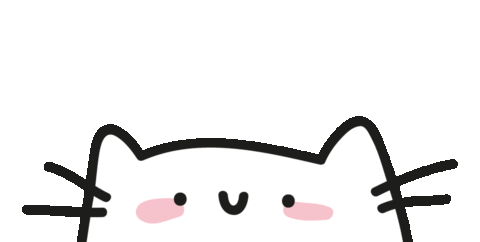
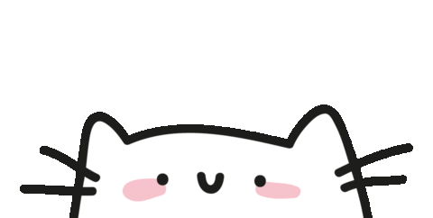

I am
Shelby
a programmer.


If you're here, it means you're about to dive into a world where each of my passions is brought to life by a fun, furry friend. I've put together this site not just to share what I do but to make it a warm, playful place for you to explore my favorite skills. Each kitty here represents a side of me—from creativity and competitive spirit to my love for good food, good books, and good naps. So, let me take you on a tour of my world, cat by cat!
Take a scroll and let these kitties guide you through my world. I hope you enjoy getting to know me as much as I enjoy sharing these parts of my life with you. So grab a cozy seat, meet my cute little mascots, and get ready to experience a little bit of creativity, relaxation, and inspiration along the way!
Meet the Artsy Cat! This little one is always up to their whiskers in paint, glue, and glitter—just like me when I'm crafting. I love turning ideas into something you can touch and feel, from handmade decor to unique DIY projects. My creativity truly shines through my love of arts and crafts!
Here's the Gamer Cat, controller in paw and ready for action! Gaming is where my competitive side and quick thinking come alive. Whether it's tackling tricky levels or exploring virtual worlds, I'm always ready to dive in and level up. Gaming keeps me on my toes and fuels my passion for challenge and strategy.
Meet the Hungry Cat, the ultimate foodie (and my spirit animal!). When I'm not creating or gaming, I'm hunting down delicious food and savoring new flavors. Trying out different cuisines, indulging in tasty treats, or discovering local spots—Eating is truly a skill I've mastered!
Meet the Bookish Cat, cozied up with a stack of books! Reading fuels my curiosity and love for learning, whether it's diving into a new novel, exploring ideas, or picking up fresh inspiration. When I'm not crafting, gaming, or eating, you'll likely find me lost in a good book.
Meet the Sleepy Cat, the true pro at rest and relaxation! Just like this cozy kitty, I believe in the art of a good nap to recharge. Whether it's catching a quick snooze or settling in for a full night's rest, Sleeping is my go-to skill for staying refreshed and ready to tackle new adventures!